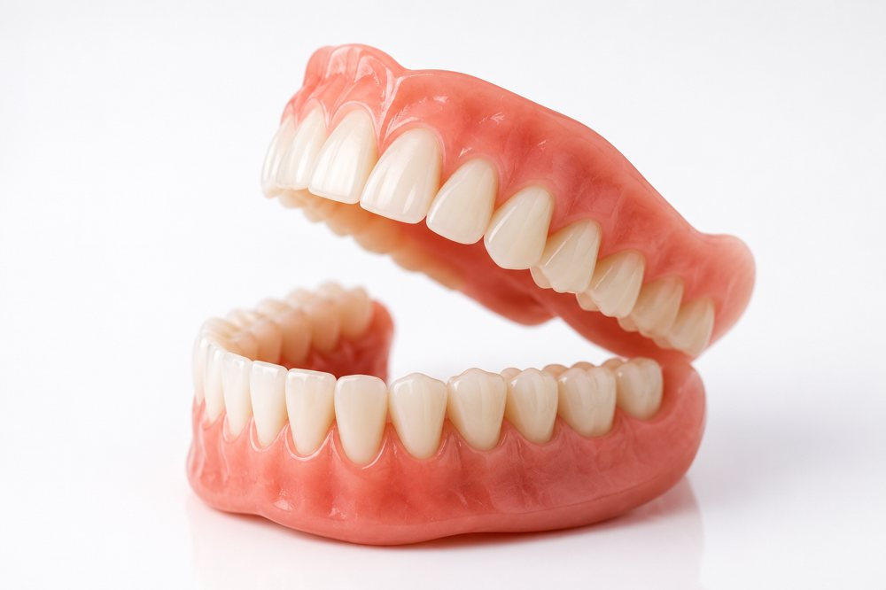
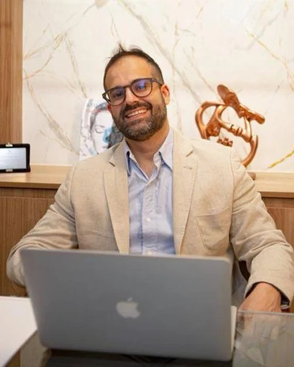
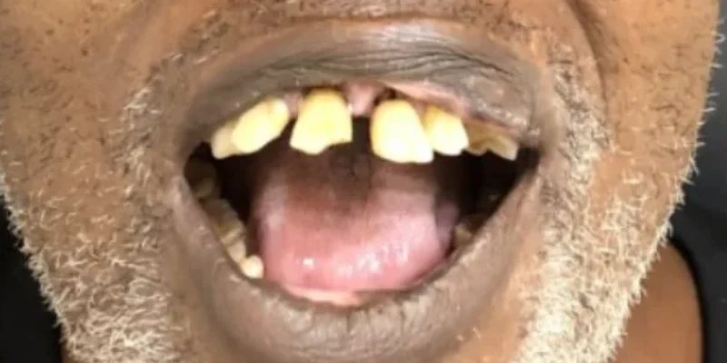
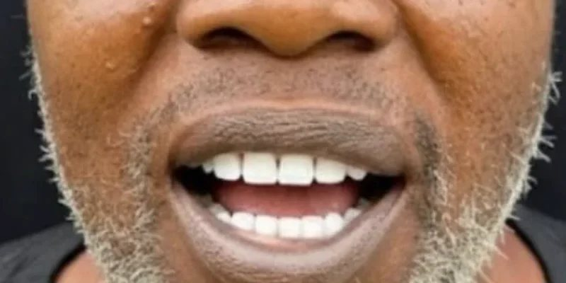
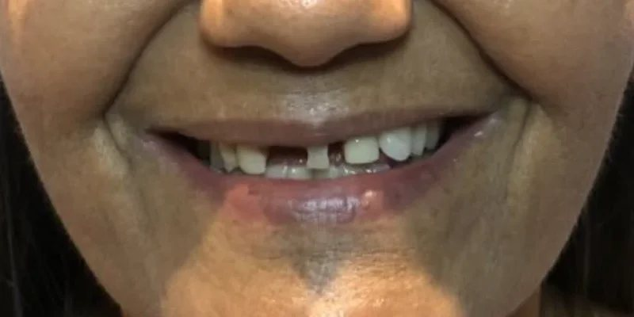
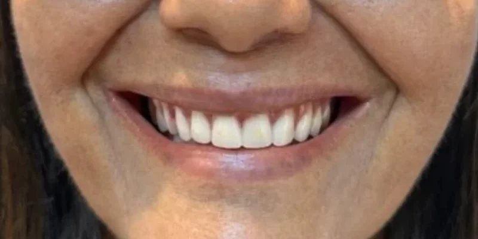
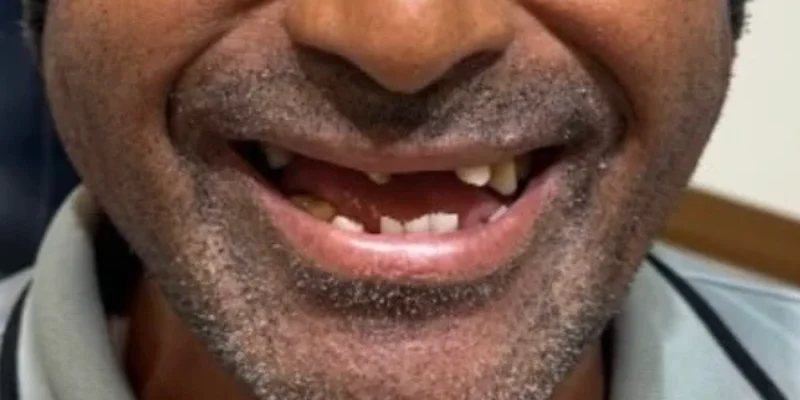
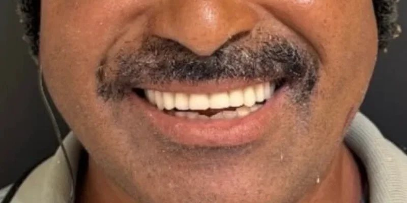
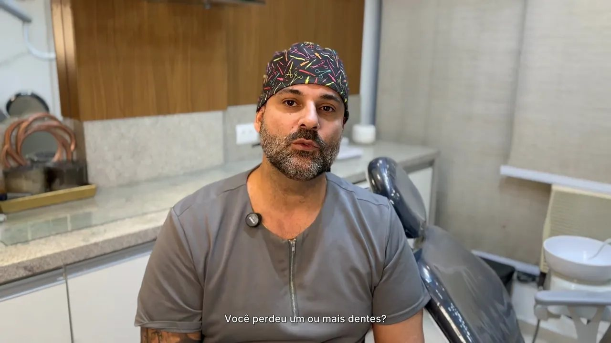

Prótese sobre implante
Dentes fixos presos em implantes. Você mastiga com firmeza e não precisa mais tirar a prótese para dormir. É o tratamento mais procurado por quem quer deixar a dentadura.
Há mais de 20 anos o Dr. Reile Gomes devolve a mastigação e o sorriso de quem perdeu vários dentes, usa dentadura ou fez tratamentos que não deram certo.

Se uma destas frases descreve você, a avaliação é o primeiro passo.
Casos assim são o dia a dia do consultório.
Pacientes com perdas grandes de dentes, pouco osso ou próteses antigas que já não funcionavam.






Imagens publicadas com autorização dos pacientes, conforme as normas do Conselho Federal de Odontologia. Cada caso é único e o resultado varia de pessoa para pessoa.

Dentes fixos presos em implantes. Você mastiga com firmeza e não precisa mais tirar a prótese para dormir. É o tratamento mais procurado por quem quer deixar a dentadura.
Para quem perdeu muitos ou todos os dentes. A boca inteira é planejada para devolver mastigação, conforto e um sorriso natural.
Repõe dentes perdidos ou muito danificados sem colocar pino dentro da raiz, com firmeza para mastigar.
Para próteses que soltam, machucam ou já perderam a forma. Avaliação do que pode ser aproveitado.
Ele explica como atende quem perdeu dentes ou usa dentadura, e o que acontece na primeira consulta.

Assistir · 49s
Com mais de 20 anos de formado, construiu a carreira em cirurgias e reabilitações orais. Hoje é procurado por pacientes que precisam recuperar os dentes e a confiança, e lidera os protocolos de atendimento da Novos Sorrisos, onde atende.
“Antes de escolher a odontologia, eu fui escolhido por ela.”
“Fui muito bem atendida, com calma e paciência. Voltei a sorrir sem vergonha depois de anos.”
“Equipe atenciosa do início ao fim. Explicaram tudo com clareza.”
E agenda a avaliação no melhor horário.
Ele examina, pede os exames necessários e explica as opções com calma.
Tratamento, prazos e condições de pagamento antes de começar.
Acompanhamento até a entrega e depois dela.
Agende a avaliação e descubra qual tratamento devolve os seus dentes fixos.